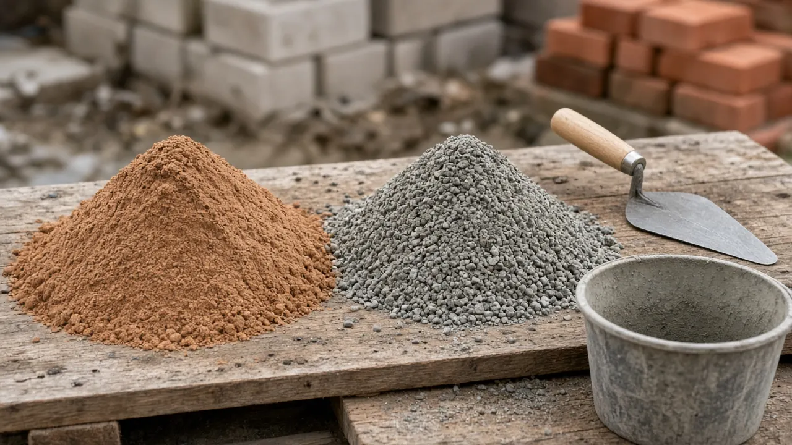
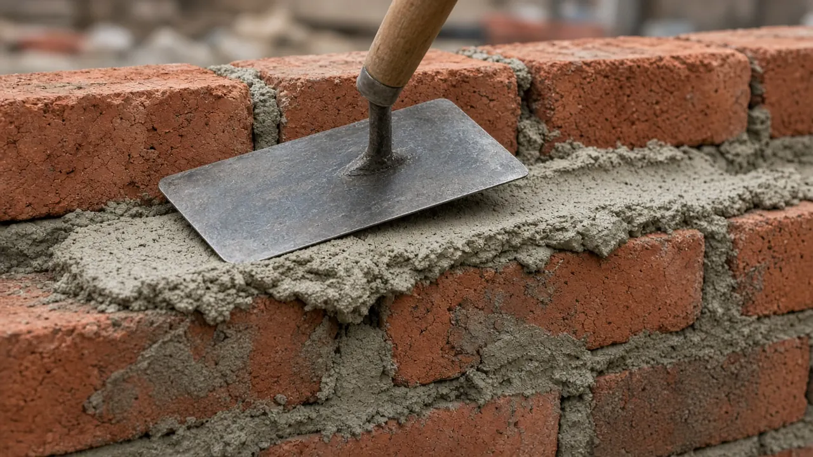

Mortar Smash › Building sand vs sharp sand
Short answer
For ordinary bricklaying, use clean masonry sand — often sold as building sand — graded to ASTM C144. Sharp sand, often sold in the US as concrete sand, is the usual fine aggregate for concrete and for a sand-cement floor bed under ASTM C33. Grading and cleanliness decide whether that sand belongs in the joint.

What building sand is
Building sand — also called soft sand, bricklaying sand, or masonry sand — is a relatively fine aggregate for brick and block mortar. Particles are typically finer than sharp sand, and often more rounded, so the mix spreads on a bed and tools into a joint. Masons use it to lay brick and concrete block, and to point or repoint when the sand matches the wall.
A bag marked “soft sand” is not automatically structural. It should not carry excess clay, organic matter, or salts. ASTM C144 covers natural sand or manufactured sand for masonry mortar, sets grading limits, and limits deleterious material. If the supplier cannot show a masonry grading, the trade name is not enough.
What sharp sand is
Sharp sand — grit sand, coarse sand, or, at many US yards, concrete sand — has larger, more angular particles. That packing suits a sand-cement floor screed or mortar bed, concrete as the fine aggregate only, and paving or landscape bedding. In a thin brick joint those grains feel harsh: the mortar is harder to spread and harder to close.
Sharp sand is not automatically banned from mortar. A clean coarse sand can be used when it meets the masonry spec. ASTM C33/C33M sets grading and quality for fine and coarse aggregate in concrete, so concrete sand selected to C33 is a concrete material. Masonry mortar still looks to C144.
Building sand vs sharp sand
| Building sand (masonry sand) | Sharp sand (concrete sand) | |
|---|---|---|
| Texture | Generally finer and smoother | Generally coarser and more angular |
| Mortar workability | Usually easier to spread and finish | Often a harsher mix in a thin joint |
| Typical job | Bricklaying, block, and pointing | Screeds, concrete, and paving |
| US spec to ask for | ASTM C144 for masonry mortar | ASTM C33 for concrete aggregate |
Neither sand is stronger on its own. Grading, binder, water, and curing decide the mix, so check the sand against the spec for that job.
Which sand for bricklaying mortar
For most bricklaying, use clean masonry sand graded to ASTM C144. In the UK, BS EN 13139 specifies aggregates for mortar, screeds, and rendering, and PD 6682-3 is guidance on that standard. Both judge measured properties, not the bag name.
On a load-bearing, engineered, historic, or coded job, follow the approved mortar spec rather than the look of the pile. Types N, S, M, and O maps the US types, and the mortar calculator estimates cement and sand.

Screed and concrete
Floor screeds and mortar beds
Coarse or sharp sand is the usual fine aggregate for a traditional cement-and-sand floor screed or mortar bed. A nominal proportion people cite is 1 part cement to 3–5 parts screeding sand, by volume. That 1:3 to 1:5 range is illustrative, not a universal specification. Building sand alone is often too fine for that layer.
Concrete
Concrete needs cement, water, fine aggregate, and coarse aggregate. Sharp sand or concrete sand can be the fine aggregate. It does not replace gravel or crushed stone. QUIKRETE’s Portland cement data sheet gives a typical volumetric example of 1 part Portland cement, 2 parts sand meeting ASTM C33, and 3 parts gravel meeting ASTM C33. That 1:2:3 mix is the manufacturer’s typical example. It is illustrative of a nominal site mix, not a strength class, and not a substitute for an engineered design. Ordinary building sand should not stand in for C33 fine aggregate.
Bricklaying mortar ratios, labeled as illustrative
The correct ratio depends on the binder and the mortar type. These three are examples, not a license to ignore the specification:
| Mortar system | Illustrative proportion by volume |
|---|---|
| Masonry cement mortar | 1 part specified masonry cement : 3 parts masonry sand |
| Portland cement-lime mortar | 1 part Portland cement : 1 part hydrated lime : 6 parts sand |
| Preblended mortar | Add water only, per the manufacturer |
The 1:1:6 cement-lime-sand line is an illustrative traditional example, not a mix for every wall. Under ASTM C270, cement-lime Type N is 1 part Portland cement with more than ½ and up to 1¼ parts hydrated lime, and damp, loose sand at 2¼ to 3 times that cementitious volume. Equal parts cement and lime with 6 parts sand is the top of the band, not the only allowed mix. QUIKRETE’s Portland cement sheet lists a narrower typical Type N of 1 part cement, 1 part Type S hydrated lime, and 4¾ to 5¾ parts ASTM C144 sand. Gauging is in how to mix mortar.
QUIKRETE’s masonry cement page states 3 parts mason sand to 1 part Type N or Type S masonry cement, by volume. That product is ASTM C91 masonry cement, not Portland cement, so the 1:3 does not transfer. The Type S data sheet also allows 2.25 to 3 parts sand under ASTM C270.
QUIKRETE Mason Mix is preblended. The page says it meets ASTM C270 and ASTM C1714 as Type S and that you add water only. Do not add extra sand to a preblended bag. Binder choice is separate; see lime vs cement mortar.
Mistakes when choosing and mixing sand
- Ungraded sharp sand in a brick joint is hard to spread and hard to finish. Use masonry sand.
- Not every bag of building sand is clean or graded. Read the supplier’s spec.
- Extra water can hide a harsh sand and still weaken the set and stain the brick.
- A masonry-cement ratio does not transfer to Portland cement, or the reverse.
- One recipe does not suit every wall. A mix stiffer than the brick can damage older masonry.
- Heat, wind, freezing, and a drifting gauge change the joint. Protect the work.
Building sand and sharp sand FAQ
Can I use sharp sand instead of building sand for bricklaying?
Only when that sand's grading and cleanliness meet ASTM C144. Ordinary coarse sharp sand, or concrete sand graded only for concrete, is not a reliable substitute for masonry sand.
Is building sand the same as masonry sand?
The names overlap, and a bag is not guaranteed to match the other name. In the US, choose masonry sand against ASTM C144 rather than by the words on the bag.
What is the best sand for pointing brick?
Clean masonry sand graded for mortar is the usual choice. On older masonry, match the original joint and use a compatible binder.
Can building sand be used for concrete?
Only if the concrete specification accepts that sand. Ordinary building sand should not replace ASTM C33 fine aggregate. Concrete also needs coarse aggregate, and sharp sand does not replace gravel or crushed stone.
Does sharp sand make mortar stronger?
Not by itself. Larger, angular grains do not automatically produce stronger mortar. Strength and durability depend on grading, binder, proportions, water, workmanship, and curing.
Building sand or sharp sand?
For bricklaying mortar, start with masonry sand graded to ASTM C144. It is the workable sand for even beds and a joint you can tool. For a floor screed or mortar bed, sharp or concrete sand is the common fine aggregate. For concrete, use fine and coarse aggregate that meet ASTM C33. Choose by the spec for that job, not by the name on the pile.
Sources
- ASTM C144, Aggregate for Masonry Mortar.
- ASTM C270, Mortar for Unit Masonry.
- ASTM C33/C33M, Concrete Aggregates.
- ASTM C91, Masonry Cement.
- BS EN 13139, Aggregates for mortar.
- PD 6682-3, guidance on BS EN 13139.
- QUIKRETE Masonry Cement, stated 1:3 mason-sand proportion.
- QUIKRETE Mason Mix, preblended mortar the page describes as Type S.
- QUIKRETE Portland cement data sheet, typical 1:2:3 concrete and Type N mortar examples.
Last updated November 5, 2026. General site practice only. Ratios marked illustrative are not a structural specification. Follow the project documents and the local code where they differ.